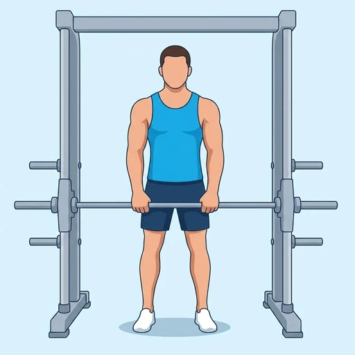

Smith Machine Upright Row
An upright row on the Smith machine, pulling the guided bar up the front of the torso with the elbows leading, to work the side deltoids and the upper traps.
Shoulders · Smith Machine · Beginner


Muscles worked by the Smith Machine Upright Row
Primary
Secondary
Also called: side deltoid, lateral delt, side delt, medial deltoid, lateral deltoid, trap.
Equipment
Also called: smith bar, guided barbell, fixed barbell, smith press.
How to do the Smith Machine Upright Row
- Set the bar at hip height, take an overhand grip a little wider than shoulder-width and stand close to it with your arms straight.
- Unrack the bar and stand tall with your shoulders back and your core braced.
- Pull the bar straight up the front of your body, leading with your elbows and keeping the bar close.
- Stop when the bar reaches your lower chest and your elbows are level with your shoulders, then pause briefly.
- Lower the bar under control until your arms are straight again, and repeat for the desired reps.
Form tips
- Stop at chest height. Pulling the bar to the collarbone rotates the shoulder into the position that causes the impingement this exercise is known for.
- Lead with the elbows, not the hands. If the wrists come up first the biceps take over and the side deltoids barely work.
- Widen the grip if the movement pinches. A narrow grip forces more internal rotation, and the fixed bar path gives you nowhere else to go.
At a glance
| Body part | Shoulders |
|---|---|
| Category | Strength |
| Force type | Pull |
| Mechanic | Compound |
| Difficulty | Beginner |
| Equipment | Smith Machine |
| Goals | Hypertrophy |
| Tags | Knee safe, Lower back safe, No axial load |
| MET | 6.0 (metabolic equivalent, for calorie estimates) |
| Unilateral | No |
| Bodyweight | No |
| Dataset id | smith-machine-upright-row |
Smith Machine Upright Row in German & Spanish
| German | Smith Machine Hochziehen |
|---|---|
| Spanish | Remo al Mentón en Máquina Smith |
Descriptions, instructions and tips ship in all three languages in the JSON.
Related exercises
Exercise data (JSON)
The record below is exactly what exercises.json ships for this exercise — names, descriptions, instructions and tips in English, German and Spanish.
{
"id": "smith-machine-upright-row",
"name_en": "Smith Machine Upright Row",
"name_de": "Smith Machine Hochziehen",
"name_es": "Remo al Mentón en Máquina Smith",
"description_en": "An upright row on the Smith machine, pulling the guided bar up the front of the torso with the elbows leading, to work the side deltoids and the upper traps.",
"description_de": "Ein aufrechtes Rudern an der Smith Machine, bei dem die geführte Stange eng an der Vorderseite des Rumpfes nach oben gezogen wird — die Ellenbogen führen, gearbeitet wird mit seitlichem Deltamuskel und oberem Trapezmuskel.",
"description_es": "Un remo al mentón en máquina Smith, tirando de la barra guiada por delante del torso con los codos al frente, para trabajar los deltoides laterales y el trapecio superior.",
"category": "strength",
"force_type": "pull",
"mechanic": "compound",
"difficulty": "beginner",
"equipment": "smith_machine",
"body_part": "shoulders",
"primary_muscles": [
"lateral_deltoid",
"trapezius"
],
"secondary_muscles": [
"anterior_deltoid",
"biceps_brachii"
],
"goals": [
"hypertrophy"
],
"tags": [
"knee_safe",
"lower_back_safe",
"no_axial_load"
],
"variation_group": "upright-row",
"is_unilateral": false,
"is_bodyweight": false,
"instructions_en": [
"Set the bar at hip height, take an overhand grip a little wider than shoulder-width and stand close to it with your arms straight.",
"Unrack the bar and stand tall with your shoulders back and your core braced.",
"Pull the bar straight up the front of your body, leading with your elbows and keeping the bar close.",
"Stop when the bar reaches your lower chest and your elbows are level with your shoulders, then pause briefly.",
"Lower the bar under control until your arms are straight again, and repeat for the desired reps."
],
"instructions_de": [
"Stelle die Stange auf Hüfthöhe ein, nimm einen Obergriff etwas weiter als schulterbreit und stelle dich mit gestreckten Armen dicht davor.",
"Entracke die Stange und stehe aufrecht mit zurückgenommenen Schultern und festem Rumpf.",
"Ziehe die Stange gerade an der Vorderseite deines Körpers nach oben, führe dabei mit den Ellenbogen und halte die Stange nah.",
"Stoppe, wenn die Stange die untere Brust erreicht und die Ellenbogen auf Schulterhöhe stehen, und halte kurz.",
"Senke die Stange kontrolliert ab, bis die Arme wieder gestreckt sind, und wiederhole für die gewünschten Wiederholungen."
],
"instructions_es": [
"Coloca la barra a la altura de las caderas, toma un agarre prono algo más ancho que los hombros y sitúate cerca de ella con los brazos estirados.",
"Desengancha la barra y ponte erguido con los hombros atrás y el core activado.",
"Tira de la barra en línea recta por delante del cuerpo, guiando con los codos y manteniendo la barra cerca.",
"Detente cuando la barra llegue al pecho inferior y los codos queden a la altura de los hombros, y haz una pausa breve.",
"Baja la barra de forma controlada hasta estirar los brazos de nuevo y repite las repeticiones deseadas."
],
"tips_en": [
"Stop at chest height. Pulling the bar to the collarbone rotates the shoulder into the position that causes the impingement this exercise is known for.",
"Lead with the elbows, not the hands. If the wrists come up first the biceps take over and the side deltoids barely work.",
"Widen the grip if the movement pinches. A narrow grip forces more internal rotation, and the fixed bar path gives you nowhere else to go."
],
"tips_de": [
"Stoppe auf Brusthöhe. Die Stange bis zum Schlüsselbein zu ziehen dreht die Schulter in genau die Position, die das für diese Übung bekannte Impingement auslöst.",
"Führe mit den Ellenbogen, nicht mit den Händen. Kommen die Handgelenke zuerst hoch, übernimmt der Bizeps und der seitliche Deltamuskel arbeitet kaum.",
"Nimm den Griff weiter, wenn es in der Schulter zwickt. Ein enger Griff erzwingt mehr Innenrotation, und die fixe Stangenbahn lässt dir keinen Ausweg."
],
"tips_es": [
"Detente a la altura del pecho. Tirar de la barra hasta la clavícula rota el hombro hacia la posición que provoca el pinzamiento por el que este ejercicio es conocido.",
"Guía con los codos, no con las manos. Si las muñecas suben primero, toman el relevo los bíceps y los deltoides laterales apenas trabajan.",
"Abre el agarre si el movimiento pincha. Un agarre estrecho fuerza más rotación interna, y la trayectoria fija de la barra no te deja ninguna alternativa."
],
"met": 6.0,
"images": {
"flat": {
"start": "images/flat/smith-machine-upright-row-start.webp",
"peak": "images/flat/smith-machine-upright-row-peak.webp"
}
}
}Fetch just this exercise
const { exercises } = await fetch(
"https://exercise-dataset.com/exercises.json"
).then(r => r.json());
const ex = exercises.find(e => e.id === "smith-machine-upright-row");Free for personal and commercial in-app use with attribution (“Exercise data by RepDB”) — see the license and ready-made attribution snippets. Redistributing the data as a dataset or API is not permitted.